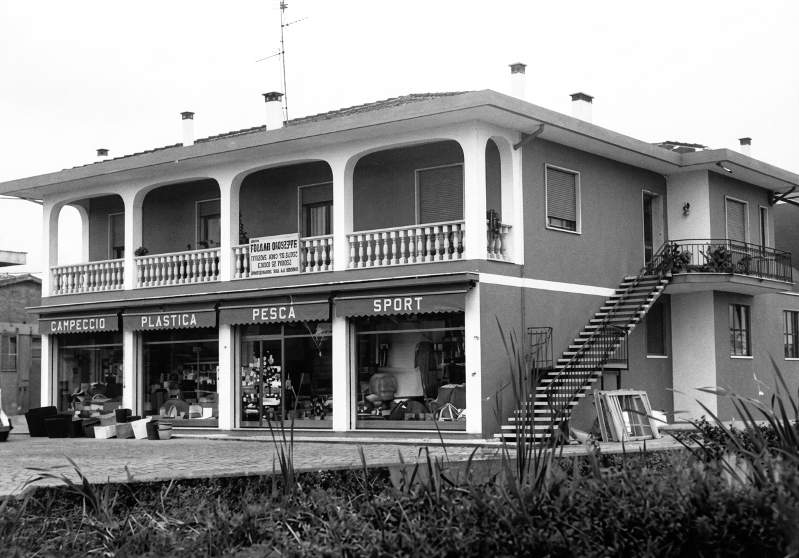

Le Origini
Marcati Teloni è un'azienda artigiana con sede a Noventa Vicentina (VI), specializzata nella progettazione e produzione di teloni e coperture in PVC su misura.
Tutto ha inizio negli anni '50 grazie all'intuizione del fondatore, Giacomo Marcati. L'attività mosse i primi passi con la lavorazione delle cinghie di cuoio e la cucitura di materiali pesanti, una competenza tecnica che diventerà il pilastro portante dell'intera produzione futura. Fin dal principio, Giacomo ha potuto contare sul sostegno fondamentale di sua moglie Luigina e sull'aiuto dei suoi figli Attilio e Roberto, che fin da piccoli hanno respirato l'aria dell'officina, imparando i segreti del mestiere e collaborando attivamente alla crescita del laboratorio.

La Crescita
Con il passare degli anni, quella che era una piccola realtà artigiana ha saputo guardare al futuro. Negli anni '80, la famiglia in azienda si è allargata con l'ingresso del figlio Flavio. Insieme, i fratelli hanno guidato la Marcati Teloni verso nuove sfide, trasformando l'esperienza pionieristica del padre Giacomo — che per primo intuì le potenzialità del PVC e delle saldature ad alta frequenza — in una realtà solida e diversificata.

Il Presente
Dalle storiche coperture per i trasporti in tela di canapa, l'azienda ha saputo evolversi con naturalezza verso settori sempre più tecnici. Oggi la nostra produzione abbraccia con la stessa cura ambiti molto diversi: realizziamo soluzioni robuste per il settore agricolo e lo stoccaggio, ci occupiamo della progettazione di teli per giostre e attrazioni, un settore che richiede massima precisione e resistenza. A queste specializzazioni si affianca il mondo dell'outdoor design, dove creiamo coperture su misura per gazebo, pompeiane e posti auto, unendo la funzionalità tecnica a un'estetica curata per i contesti privati e professionali.
Oggi, nel 2026, questo cammino prosegue con l'ingresso della terza generazione: il nipote Niccolò affianca Flavio nella gestione, portando una visione moderna e nuove energie. È un legame indissolubile tra passato e futuro, dove l'entusiasmo dei giovani si sposa con la pluriennale esperienza artigiana della famiglia.